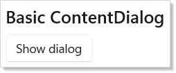
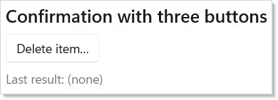
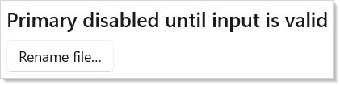
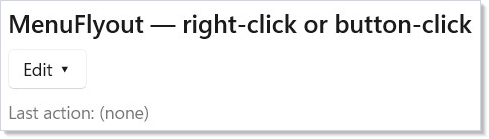
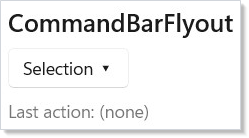
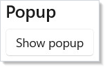

WinUI reference: For the full property surface and design guidance, see Dialogs And Flyouts.
Dialog and flyout surfaces interrupt the user. That makes them the most
costly UI primitive in the app's attention budget — every modal dialog
steals focus, every flyout dismisses on outside click, every popup
arrives without a route back. Microsoft.UI.Reactor (Reactor) treats dialogs and flyouts as
controlled components: you own the open/closed boolean, the component
tree always contains the dialog element, and the visibility is a state
flag the user-driven event handlers flip back. That is the same shape as
TextBox from Forms, and it makes the dialog testable —
the dialog is open if and only if its driving state says so. Read this
page when you are reaching for ContentDialog for a Save/Discard choice,
MenuFlyout for a right-click menu, CommandBarFlyout for a selection
toolbar, or Popup for the bespoke overlay that none of the above
covers. Pair every dialog with a corresponding entry in
commanding.md — the same Command should usually back
the trigger (button or menu) and the dialog's primary action.
Dialogs and Flyouts¶
Four primitives sit on this page. Pick by shape, not by aesthetic:
| Control | Shape | Dismiss | Use when |
|---|---|---|---|
ContentDialog |
Modal, screen-centered, three buttons | Button click | The user has to make a choice before continuing. |
MenuFlyout |
Pop-up menu next to a target | Outside click / Esc | Right-click or chevron menu of discrete actions. |
CommandBarFlyout |
Mini-toolbar next to a target | Outside click / Esc | Selection context — "what to do with this thing". |
Popup |
Free-form overlay | Light-dismiss / explicit | Anything the three above can't render — color picker, in-place editor, custom tooltip. |
ContentDialog¶
class BasicDialogDemo : Component
{
public override Element Render()
{
var (open, setOpen) = UseState(false);
return VStack(8,
SubHeading("Basic ContentDialog"),
Button("Show dialog", () => setOpen(true)),
// Dialog lives in the tree at all times. IsOpen controls
// visibility; OnClosed flips it back when the user dismisses.
ContentDialog(
"Welcome",
TextBlock("Thank you for trying Reactor."),
primaryButtonText: "OK") with
{
IsOpen = open,
OnClosed = _ => setOpen(false),
}
).Padding(24);
}
}

ContentDialog is the modal. Pass a title, a content element, and the
primary button label. The factory returns a ContentDialogElement
record; you spread additional init-only properties (IsOpen,
OnClosed, secondary/close button text) with the with { ... }
expression. The dialog element lives in the tree at all times — it's a
record, not a method call. IsOpen = false keeps it hidden; flipping
IsOpen = true from a button handler opens it; the OnClosed callback
flips it back when the user dismisses.
Property (via with { ... }) |
Effect |
|---|---|
IsOpen |
The controlled visibility flag. |
PrimaryButtonText |
Default-action button label. Set via the factory argument. |
SecondaryButtonText |
Optional second button (left of primary). |
CloseButtonText |
Optional close button. The "X" / Esc dismiss. |
DefaultButton |
Which button gets the accent color and the Enter binding (Primary / Secondary / Close). |
OnClosed |
Action<ContentDialogResult> — Primary / Secondary / None. |
OnOpened |
Fires after the dialog finishes opening (useful for autofocus). |
IsPrimaryButtonEnabled |
Disable the primary action without removing it. |
IsSecondaryButtonEnabled |
Same for the secondary. |
Three-button dialogs¶
The three-button shape (Primary + Secondary + Close) is the
default for destructive confirmations. The convention from
Fluent UI
and macOS HIG agrees: place the destructive action in Primary, the
non-destructive cancel in Secondary, and route Esc to whichever the
DefaultButton is set to:
class ConfirmDialogDemo : Component
{
public override Element Render()
{
var (open, setOpen) = UseState(false);
var (result, setResult) = UseState("(none)");
return VStack(8,
SubHeading("Confirmation with three buttons"),
Button("Delete item…", () => setOpen(true)),
TextBlock($"Last result: {result}").Opacity(0.6),
ContentDialog(
"Delete this item?",
TextBlock("This action cannot be undone."),
primaryButtonText: "Delete") with
{
IsOpen = open,
SecondaryButtonText = "Cancel",
CloseButtonText = "Close",
DefaultButton = ContentDialogButton.Close,
OnClosed = r =>
{
setResult(r.ToString());
setOpen(false);
},
}
).Padding(24);
}
}

The ContentDialogResult value in OnClosed tells you which path the
user took. Primary and Secondary correspond to the labeled buttons;
None covers Esc, Close button, and click-on-scrim dismissal — treat
all three as Cancel.
Gated primary¶
When the dialog content is itself a form (rename file, set password),
the primary button should be disabled until the form is valid. Use
IsPrimaryButtonEnabled rather than .IsEnabled(false) on a custom button
inside the content — the dialog primary keeps the accent color, the
keyboard binding to Enter, and the focus trap that the WinUI dialog
provides:
class DialogGatedPrimaryDemo : Component
{
public override Element Render()
{
var (open, setOpen) = UseState(false);
var (name, setName) = UseState("");
return VStack(8,
SubHeading("Primary disabled until input is valid"),
Button("Rename file…", () => setOpen(true)),
ContentDialog(
"Rename file",
VStack(8,
TextBlock("New filename:"),
TextBox(name, setName, placeholderText: "untitled.txt")
.Width(280)),
primaryButtonText: "Rename") with
{
IsOpen = open,
SecondaryButtonText = "Cancel",
// .IsPrimaryButtonEnabled drives the inline primary
// disabled state without taking it out of tab order.
IsPrimaryButtonEnabled = !string.IsNullOrWhiteSpace(name),
OnClosed = _ => setOpen(false),
}
).Padding(24);
}
}

Caveat:
ContentDialog.ShowAsyncis single-instance perXamlRoot— the WinUI control raisesShow another ContentDialog before closing the previousif two dialogs try to open at once. Reactor's controlled-IsOpenpattern routes through the same constraint: opening dialog B from dialog A'sPrimaryhandler runs B'sIsOpen = trueset before A's close completes, and the second show throws. Always close dialog A first (viasetOpenA(false)and the dispatcher's commit), then open B in the next render — for example, queue B's open via aUseEffectkeyed on A'sIsOpengoing false.
WinUI design page: Dialogs.
MenuFlyout¶
class MenuFlyoutDemo : Component
{
public override Element Render()
{
var (action, setAction) = UseState("(none)");
return VStack(8,
SubHeading("MenuFlyout — right-click or button-click"),
MenuFlyout(
Button("Edit ▾"),
MenuItem("Cut", () => setAction("Cut"), icon: "Cut"),
MenuItem("Copy", () => setAction("Copy"), icon: "Copy"),
MenuItem("Paste", () => setAction("Paste"), icon: "Paste"),
MenuSeparator(),
MenuSubItem("Format",
ToggleMenuItem("Bold", isChecked: false),
ToggleMenuItem("Italic", isChecked: true)),
MenuSeparator(),
MenuItem("Delete…", () => setAction("Delete"))
),
TextBlock($"Last action: {action}").Opacity(0.6)
).Padding(24);
}
}

MenuFlyout attaches a popup menu to a target element. Click the
target — the menu opens at it. Click outside the menu — it dismisses.
The factory takes the target as the first argument and the items as a
variadic tail; the result wraps the target so it appears in the tree at
the target's position.
| Item factory | Shape |
|---|---|
MenuItem(label, onClick, icon?) |
Standard menu item with a click handler. |
MenuItem(Command) |
Bind to a command. Label, icon, enabled-state, accelerator come from the command. |
ToggleMenuItem(label, isChecked, onChanged?) |
Two-state check item. |
RadioMenuItem(label, groupName, isChecked, onClick?) |
One of a radio group. |
MenuSeparator() |
Horizontal divider. |
MenuSubItem(label, items...) |
Nested submenu. |
The same Command record that drives a Button plugs into
MenuItem(Command) — one declaration, three surfaces
(button, menu, keyboard shortcut). See the
commanding integration pattern below.
WinUI design page: Menus and context menus.
CommandBarFlyout¶
CommandBarFlyout(
Element target,
AppBarItemBase[]? primaryCommands = null,
AppBarItemBase[]? secondaryCommands = null)
class CommandBarFlyoutDemo : Component
{
public override Element Render()
{
var (action, setAction) = UseState("(none)");
return VStack(8,
SubHeading("CommandBarFlyout"),
CommandBarFlyout(
Button("Selection ▾"),
primaryCommands: new AppBarItemBase[]
{
AppBarButton("Cut", () => setAction("Cut"), icon: "Cut"),
AppBarButton("Copy", () => setAction("Copy"), icon: "Copy"),
AppBarButton("Paste", () => setAction("Paste"), icon: "Paste"),
},
secondaryCommands: new AppBarItemBase[]
{
AppBarButton("Select All", () => setAction("Select All")),
AppBarButton("Find", () => setAction("Find")),
}),
TextBlock($"Last action: {action}").Opacity(0.6)
).Padding(24);
}
}

CommandBarFlyout is the selection-context toolbar — the Cut / Copy /
Paste row that floats over a text selection, the inline "actions on
this row" surface that some lists show. Primary commands render
inline as icon buttons; secondary commands collapse into the overflow
menu. The same AppBarItemBase records that fill a CommandBar fill
this surface — the entire item array is interchangeable.
| Item factory | Shape |
|---|---|
AppBarButton(label, onClick, icon?) |
Standard tool-strip button. |
AppBarButton(Command) |
Command-driven variant. |
AppBarToggleButton(...) |
Two-state. |
AppBarSeparator() |
Vertical divider. |
WinUI design page: Command bar flyout.
TeachingTip target references¶
TeachingTip can anchor to an element that lives in another container.
Create an ElementRef<FrameworkElement>, attach it to the target with
.Ref(target), and pass the same cell to the tip with the factory
target: parameter or the .Target(target) fluent:
var target = UseElementRef<FrameworkElement>();
return HStack(16,
Border(
Button("Show anchored tip", () => setShow(true))
.Ref(target)),
Border(
TeachingTip(
"Cross-container target",
"This TeachingTip is declared in a different subtree.",
target: target) with
{
IsOpen = show,
OnClosed = () => setShow(false),
}));
The target is a reactive reference property, not a one-time
target.Current read. The tip can mount before or after the button,
and if the button is recreated the edge re-resolves before the next
open. The gallery's TeachingTipPage uses this pattern for its
"TeachingTip targeting another subtree" sample.
Popup¶
class PopupDemo : Component
{
public override Element Render()
{
var (open, setOpen) = UseState(false);
// Popup is a free-form positioned surface. Use it for overlays
// that aren't dialogs or flyouts — color pickers, in-place
// editors, custom tooltips.
var popupContent = Border(
VStack(8,
TextBlock("This is a Popup.").Bold(),
TextBlock("Click outside to dismiss.")
).Padding(12)
).Background("#FFFFFF").WithBorder("#888888").CornerRadius(6);
return VStack(8,
SubHeading("Popup"),
Button(open ? "Hide popup" : "Show popup",
() => setOpen(!open)),
Popup(popupContent, isOpen: open,
onClosed: () => setOpen(false))
.IsLightDismissEnabled()
.Offset(120, 0)
).Padding(24);
}
}

Popup is the unstructured overlay — what you reach for when
ContentDialog, MenuFlyout, and CommandBarFlyout are all the wrong
shape. Color pickers, in-place rename editors, custom tooltips, dropdown
content that isn't a menu — all of them are popups.
| Fluent | Effect |
|---|---|
.IsLightDismissEnabled(bool enabled = true) |
Close on outside click. Off by default (matching WinUI); call .IsLightDismissEnabled() to enable. |
.Offset(horizontal, vertical) |
Position relative to the popup's anchor point. |
.Opened(Action) |
Fires after the popup is on screen. |
.Closed(Action) |
Fires after the popup leaves the screen. |
.Set(p => p.PlacementTarget = ...) |
Anchor to a specific element. |
The popup itself does not provide a focus trap or an ARIA dialog role.
For modal-feeling popups, wrap the content in your own focus management
(UseFocusTrap from accessibility.md) and set
AutomationProperties.Role = Dialog on the root through .Set(...).
For non-modal popups (tooltips, hover cards), neither is needed.
WinUI primitives reference: Popup class.
Commanding integration¶
The cleanest way to keep dialog logic out of every surface that opens
it is to put the action behind a Command. The same record lights up
a button, a menu item, and (with .Accelerator) a keyboard shortcut —
authoring the dialog primary as Command.Execute is the natural
extension:
class CommandingIntegrationDemo : Component
{
public override Element Render()
{
// One Command drives the button, the menu item, and (via
// .Accelerator) Ctrl+S. The same Command can light up an
// AppBarButton in a CommandBarFlyout too — same declaration,
// three surfaces.
var (saved, setSaved) = UseState(false);
var save = new Command
{
Label = "Save",
Execute = () => setSaved(true),
CanExecute = !saved,
Icon = SymbolIcon("Save"),
};
return VStack(8,
SubHeading("One Command, two surfaces"),
Button(save), // primary CTA
MenuFlyout(
Button("File ▾"),
MenuItem(save), // menu duplicate
MenuSeparator(),
MenuItem("Reset", () => setSaved(false))),
TextBlock(saved ? "Saved." : "Unsaved changes.")
.Opacity(0.6)
).Padding(24);
}
}
Command.CanExecute = false greys out every surface bound to that
command — the menu item, the button, the keyboard binding all disable
in one place. Without commanding, you would duplicate the
isEnabled derivation per surface. See commanding.md
for the full pattern (async commands, parameterized Command<T>,
re-entrance guards).
Focus and ARIA¶
WinUI's ContentDialog ships a focus trap and the Dialog ARIA role
out of the box. When the dialog opens, focus moves to the default
button; tabbing wraps within the dialog; Esc closes via the close
button. Screen readers announce the dialog title as the
AutomationProperties.Name. None of this needs configuration — pass
the title and content, and the accessibility surface is correct.
MenuFlyout and CommandBarFlyout apply the same focus rules at the
WinUI level: opening moves focus to the first enabled item, arrow keys
navigate, Esc dismisses, focus returns to the originating element on
close.
The exception is Popup. The popup has none of the above; it is a
positioning primitive. For a popup that should behave like a modal,
wrap its content with UseFocusTrap and apply the dialog role
explicitly:
// Inside a popup that should behave modally:
var trap = UseFocusTrap();
return Popup(
Border(content).WithFocusTrap(trap),
isOpen: open);
The trap shape and the ARIA mapping are documented in accessibility.md.
Dismiss reasons¶
Every dialog and flyout can close five different ways. Treat them as equivalent in your handlers — there is no "real cancel" vs. "implicit cancel":
| Surface | Primary close paths |
|---|---|
ContentDialog |
Primary button, Secondary button, Close button, Esc, click-on-scrim (returns None). |
MenuFlyout |
Item click (the action), outside click, Esc. |
CommandBarFlyout |
Command click, outside click, Esc. |
Popup |
Outside click (when LightDismiss = true), explicit IsOpen = false. |
For ContentDialog, the OnClosed callback is the single dismiss
notification — read ContentDialogResult to discover which path the
user took, but accept that None is the user's right.
Reference¶
| Element | Factory | Open/close | Lifecycle |
|---|---|---|---|
ContentDialogElement |
ContentDialog(title, content, primaryButtonText) |
IsOpen (init), OnClosed(result) |
OnOpened, OnClosed |
MenuFlyoutElement |
MenuFlyout(target, items...) |
Auto on target click | n/a |
CommandBarFlyoutElement |
CommandBarFlyout(target, primary?, secondary?) |
Auto on target click | n/a |
PopupElement |
Popup(child, isOpen?, onClosed?) |
isOpen arg or .IsOpen init |
.Opened, .Closed |
Patterns¶
Dialog-driven async command¶
Async confirmations — "Are you sure?" → "Doing it…" → "Done." — fit a
single Command with ExecuteAsync. The dialog primary triggers the
command; the command tracks IsExecuting via UseCommand;
the dialog's primary disables itself while the action runs. The user
can't double-tap the destructive button:
var delete = ctx.UseCommand(new Command
{
Label = "Delete",
ExecuteAsync = async () =>
{
await api.DeleteAsync(item.Id);
setOpen(false);
},
CanExecute = !item.IsLocked,
});
ContentDialog("Delete?", body, primaryButtonText: "Delete") with
{
IsOpen = open,
SecondaryButtonText = "Cancel",
IsPrimaryButtonEnabled = delete.IsEnabled,
OnClosed = r =>
{
if (r == ContentDialogResult.Primary && delete.IsEnabled)
delete.Execute?.Invoke();
else
setOpen(false);
},
}
This mirrors the recipes/modal-dialog
recipe, which builds the same shape out of an inline modal instead of
the WinUI control.
Right-click on a list row¶
MenuFlyout attaches to its target. Inside a ListView
row template, wrap the row in MenuFlyout(rowContent, items...) and
the menu binds to that row instance. Tie the menu items to the row's
data — Command<T> lets a single command apply to every row's
context:
ListView(items, x => x.Id, (item, _) =>
MenuFlyout(
RowContent(item),
MenuItem(deleteCommand, item),
MenuItem(renameCommand, item),
MenuSeparator(),
MenuItem(propertiesCommand, item)))
Common Mistakes¶
Imperatively opening a dialog from an event handler¶
// Don't:
Button("Save", async () =>
{
var dialog = new ContentDialog { Title = "Confirm" };
await dialog.ShowAsync();
})
class BasicDialogDemo : Component
{
public override Element Render()
{
var (open, setOpen) = UseState(false);
return VStack(8,
SubHeading("Basic ContentDialog"),
Button("Show dialog", () => setOpen(true)),
// Dialog lives in the tree at all times. IsOpen controls
// visibility; OnClosed flips it back when the user dismisses.
ContentDialog(
"Welcome",
TextBlock("Thank you for trying Reactor."),
primaryButtonText: "OK") with
{
IsOpen = open,
OnClosed = _ => setOpen(false),
}
).Padding(24);
}
}
The imperative path drops out of the Reactor render model — the dialog
isn't in the tree, so it can't be styled by the parent's theme, can't
be tested by the renderer fixture from testing.md, and
can't share state with the rest of the component. The controlled
IsOpen flag is the canonical pattern.
Reusing a single dialog for unrelated decisions¶
// Don't:
var (open, setOpen) = UseState(false);
var (dialogType, setDialogType) = UseState("");
// One dialog, branching on dialogType for title/body/buttons.
Two decisions, two dialogs. The branching version makes every dialog
state read the dialog-type string, which leaks dialog concerns into
your component's data model and makes the testing fixture fragile.
Each modal action gets its own dialog element with its own state pair
— the cost is two useState calls and an extra ContentDialog
declaration, both nearly free.
Tips¶
Pair every dialog trigger with a Command. The trigger lives in
one or more surfaces (toolbar, menu, keyboard shortcut); the command
gives you one place to wire enabled-state, telemetry, and undo. The
dialog primary then routes through command.Execute.
Treat ContentDialogResult.None as Cancel. Esc, click-on-scrim,
and the close-X all return None. Don't try to distinguish them — if
the user didn't pick Primary or Secondary, they didn't pick.
Don't reach for Popup until the three structured surfaces have
failed. ContentDialog, MenuFlyout, and CommandBarFlyout carry
their own focus and ARIA semantics. Popup doesn't, and you have to
re-implement focus trapping yourself.
Open the dialog once per decision, not once per render. If
open is in your state, only the button handler should flip it true.
A UseEffect that does setOpen(true) on a condition will reopen the
dialog after every dismiss until the condition changes — gate the
effect with a "user-acknowledged" flag.
Show a long-running action's progress inside the dialog, not
after. Closing a dialog mid-action is jarring. Wire the dialog
primary to an async Command, let IsExecuting swap
the primary label for a spinner, then close on completion.
Next Steps¶
- Status and Info — Previous: non-interactive feedback (InfoBar, ProgressRing, TeachingTip).
- Data System — Next: DataGrid and the data-source pipeline.
- Commanding — The Command record that drives buttons, menu items, dialogs, and shortcuts.
- Accessibility — Focus traps, ARIA roles, and dialog landmark behavior.
- Recipes: Modal dialog — End-to-end recipe building a confirmation modal.